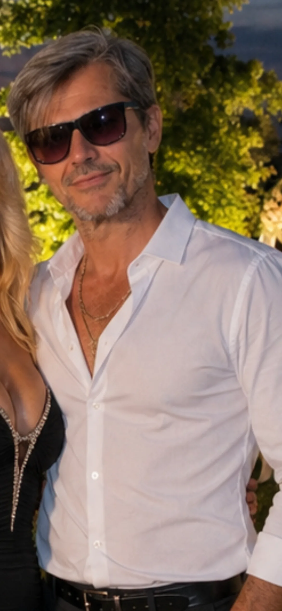

Diario
Non solo palestra — anche la vita fuori
Pensieri e vita
Riflessioni per Ginevra — vita, equilibrio e sport senza log palestra.
18 articoli · lascito di un papà presente · zero coaching
Un lascito per Ginevra, mia unica figlia. Non sono solo un patito di palestra: sono papà, imprenditore, uomo che cerca equilibrio. I log allenamento stanno in Allenamenti.
Agosto 2026
-
Daily discussion thread di luglio
Parodia goliardica del Daily Discussion Thread applicata alla vita di Gino a 57 anni — palestra, lavoro, papà. Finzione
-
Bodybuilding: tutti vogliono bodybuilder
Satira goliardica sul mito «everybody wants to be a bodybuilder» — finzione cartoon, zero vendita, costanza vera a 57 an
-
Overtraining e recupero dopo i 50: riflessione a 57 anni
Recupero e overtraining per il natural maturo: TSB, costanza e segnali da ascoltare. Riflessione personale, non consulen
-
Lo specchio della palestra: epica vs realtà
Satira sul selfie da specchio in palestra — finzione a fumetti, zero influencer. Gino 57 anni, diario autentico.
-
Leg day: quando l'ascensore è il boss finale
Parodia goliardica sul giorno dopo leg day a 57 anni — scale, ascensori e dignità. Finzione visiva, costanza vera.
-
Università delle proteine: laurea in shake a 57 anni
Satira goliardica su miti whey e bro-science — zero vendita integratori. Fumetti IA, zero integratori in vetrina.
-
10 giorni di riposo, stessa concentrazione
Ferie meritate a quasi 60 anni: cicli trimestrali, pesi contro resistenza e difesa da osteoporosi.
-
Ken il Poeta e l'Anima Indomita
La poesia che rispecchia tenere testa a tutto — anima invincibile, capo insanguinato ma non chinato.
-
Demolition Men
Sempre stanco demolito dalla vita — poi Ken il Guerriero che sconfigge le avversità con costanza.
-
Un viaggio a ritroso nel tempo
Partire ad allenarsi, mille difficoltà e quando l'abitudine entra in routine.
Luglio 2026
-
Reggere gli scatti della vita
Sport come ancora — Arnold Schwarzenegger e modelli da imitare a 57 anni.
-
Blocco 1: ipertrofia accumulo da settembre
Split A1-B1-A2-B2, 13 settimane, deload sett. 13 — strategia per un natural a 57 anni.
-
Allenare pensieri positivi
Serenità mentale contro il rumore dei social — una rep positiva alla volta.
-
Clean Halo a 57: mobilità spalle con kettlebell
Da un reel a un gesto fisso in Scheda 3 — spalle che imparano ancora.
-
Mare, sole e silenzio
La pausa che ricarica lo sportivo — non debolezza, strategia.
-
Gambe e bicipiti tenaci
Pressa pesante e ipertrofia senza cedimento cieco — tono luminoso.
-
Sport, lavoro e famiglia a 57 anni
Equilibrio tra impegni — lo sport come struttura di serenità.
-
Perché ho aperto La Forza Quotidiana
Dedicato a Ginevra — papà presente, senza bodybuilding da vetrina.
18 articoli · Ultimo aggiornamento: 16 agosto 2026